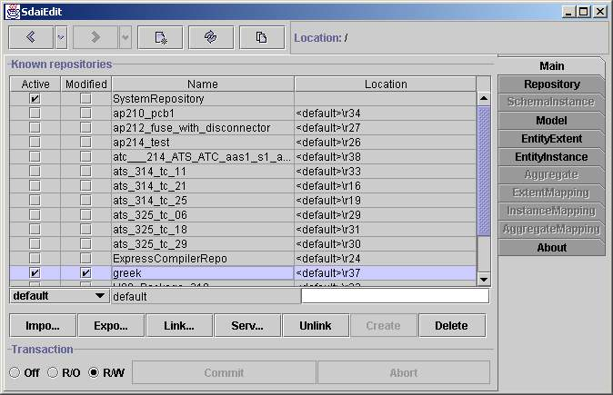

Main Page

Known Repositories
The main page contains a list of all repositories known in the current
session.
A repository may contain the data from an imported STEP-File or it may
be a repository on a database containing data for many projects.
The first listed SystemRepository contains meta-data of the supported
EXPRESS
schemas and Mappings. The data in this repository is read-only. All
other
repositories contain application data which available for
reading and writing.
Initially only the SystemRepository and the locally available
repositories
are "known" and listed here. Further repositories can be created or
imported
from STEP-files. In addition remote repositories can be linked and made
available
in this list of known repositories.
There are four columns in the repository list:
- Active shows whether a repository is open or not.
Initially
all repositories except the SystemRepository are closed. By clicking on
a check
box you can open or close a repository. A repository can also be opened
by entering
it with a double click and proceeding to the Repository page.
- Modified indicates if something in the repository was
changed
and not yet stored permanently. The modified flag is cleared
automatically
when the transaction is commited or aborted.
- name and
- location.
The name column lists the names of all repositories. The
forth
column shows the repository location. There are several types of
repositories:
linked, connected from a server and local. The type of a repository can
be
identified from its location. Usually, locations of remote repositories
(from
server) are written as URL-string. The locations of the local
repositories
are identifiedby the '<default>' prefix whereas the location of
the linked
repositories are specified by the path where they are placed
originally.
Editing Line
The Editing line contains values which are required for operations on
repositories. There is a combo box and two text fields in this line.
Fields
are aligned to repositories columns and have the same meaning except of
the first
combo box. In the text field which is bellow the name column you can
specify repository
name and the same for location field where the
repository
location is specified. It is essential to remember that these fields
are used just with
the buttons below. In the combo you can choose three kinds of
repositories:
default, specify and temporary. Defaultmeans
that the name of the repository will be chosen from the imported or
linked
file. Default can not be used for creating repository because
it has
no name yet. Specify means that the specified name will be
chosen for naming
the repository instead of taking the name from the imported file
or the linked repository.
Temporary will create a repository which will be available just
for the current
session. It will be deleted automatically after exiting the
program. Temporary
repositories have their own marking &repositoryX, where X
is a number of
a temporary repository.
Buttons Row
There are seven buttons which operate on repositories: import,
export, link,server, unlink, create
and
delete. Some words about every of them. Import button
imports a physical
file (usualy its extension is: .ph or .stp) into the local
repositories. After
you press the button, the open dialog opens and you can choose
preferred file.
Import takes values from edit line. Export button makes
the
same but in an oposite direction. It exports repository to a physical
file. There
is also the save dialog, where you can specify needed filename and
path. Link
repository does similar things as import, but instead of taking
physical
file it takes another repository. It's essential to know, that the
linked repositories
stay at their original place and are not transferred to the default
location.
Server opens the dialog where you can specify parameters for
taking
repository from sdai server. Specified parameters are server
name, user
name, password and port. After you specify these values and press
search you
will see the list of repositories available on the server and visible
by this user.
After that you can choose one and link. Unlink button serves
for unlinking
both linked and server repositories. If you do not unlink linked
repository
it will also appear the next time you start the application. If you
link the repository
as temporary, then there is no needed to unlink it. Create
makes a new empty
repository with the specified name and location. Delete will
erase a repository.
Be careful - operations on repositories are not in transaction. So if
you
delete a repository there will be no way back to restore it.
Transaction Row
There is one group with three radio buttons and two other buttons commit
and abort. All these controls are operating on a transaction.
By default
when you start a transaction it is in the read-only mode, when you go
forward and try
to edit something, it automatically switches to a read/write mode. So,
there is
no need to change the transaction for you. But if you prefer to switch
it by hand
you can do this. Commit and abort is available only if
data have
changed. Commit will add all changes to repositories and abort
will
discard these changes.